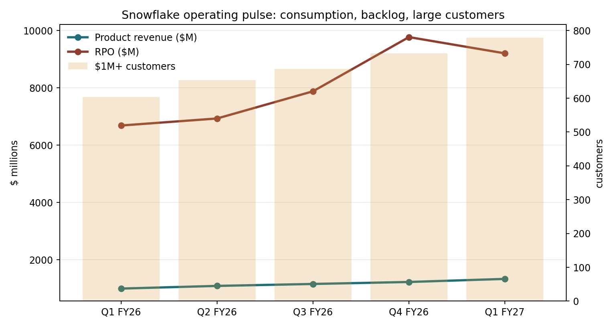
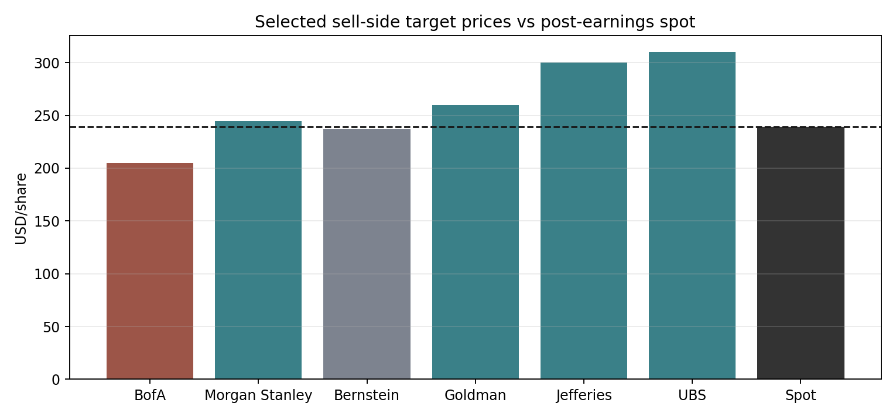
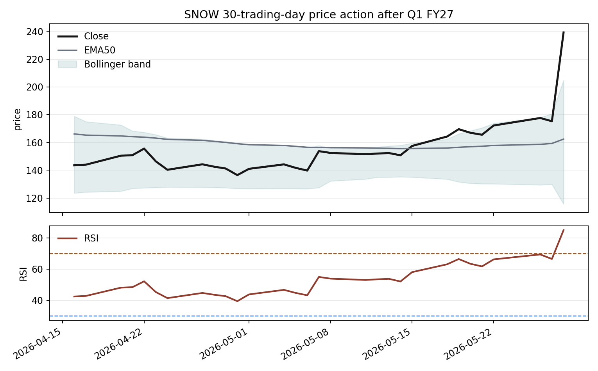

CompanySnowflake Inc. (SNOW)
Date2026-05-29
AnalystCodex SitRep
DecisionWatchlist / targeted diligence
Snowflake：AI Data Cloud 的 NSM 转换正在发生，但价格已提前补了一大口
Snowflake 的一季度把市场从“AI 会不会稀释软件利润率”的旧叙事里拽出来了：产品收入重新加速，RPO 仍在高位，Cortex Code / Snowflake Intelligence 开始被管理层明确纳入全年指引。但 5 月 28 日股价单日约 +36% 后，错定价窗口不再便宜；现在值得做下一轮客户/伙伴访谈，而不是把它当成显而易见的深度折价。
一眼快照
| 项目 | 最新值 | 含义 |
|---|---|---|
| 股价 / 市值 | $239.20 / ~$82.9B | OpenBB/yfinance 2026-05-29 报价；Q1 财报后估值已明显重定价。 |
| Q1 FY27 产品收入 | $1.334B / +34% | 从 Q4 FY26 的 +30% 和去年同期 +26% 继续加速。 |
| NRR / $1M+ 客户 | 126% / 779 | 留存率改善，$1M+ 客户同比 +29%，46 家在 Q1 跨过门槛。 |
| RPO | $9.21B / +38% | Q4 季节性高点后回落，但同比仍高；约 50% 预计 12 个月内确认。 |
| FY27 指引 | $5.84B 产品收入 / +31% | 从原先 $5.66B / +27% 上修；非 GAAP OPM 从 12.5% 上修至 13.5%。 |
| 估值锚 | ~14x FY27E 产品收入 | 按当前 EV 和公司 FY27 产品收入指引粗算，已接近多家卖方目标价框架。 |

NSM 框架
| 层级 | 我认为的 NSM | 当前证据 | 风险 |
|---|---|---|---|
| CEO NSM | “agentic control plane” 的生产化采用：Cortex Code、Snowflake Intelligence、工作流/应用/迁移的上线速度。 | AI 功能账户超过 13,600；Cortex Code 超过 7,100 个账户；使用案例部署数同比 +114%。 | 采用不等于可持续付费；客户可能对 token/AI 成本设限。 |
| 长期投资者 NSM | 受治理保护的工作负载密度 × 可计量消费 × FCF 转化。 | 产品收入 +34%、NRR 126%、RPO +38%、FY27 FCF margin 指引 23%。 | AI 产品毛利低于核心平台；SBC 与云承诺可能吞掉经营杠杆。 |
| 市场共识 NSM | 产品收入 beat / guide、AI 贡献、非 GAAP OPM、EV/Sales。 | 股价在 Q1 后暴涨，说明市场已从“AI 拖累”切到“AI 加速+杠杆”。 | 一旦增速回到 20% 中段或毛利承压，市场会回到高倍数软件的旧尺子。 |
| 错配诊断 | 健康滞后正在收敛。 | 旧市场锚低估了 AI 对核心消费和工程效率的乘数；但财报后折价已被部分修复。 | 这不是“便宜资产”，更像需要连续验证的 regime transition。 |
价值链条
用户价值 → 行为：Snowflake 让企业把结构化、非结构化、应用上下文和权限治理放在一个可审计环境里；AI 把“查数、建管道、迁移、生成应用/agent”从专家任务压缩成自然语言工作流。
行为 → 组织依赖：当业务用户用 Snowflake Intelligence 问数，工程师用 Cortex Code 建 pipeline/agent，安全团队继续沿用 RBAC、masking、lineage 与审计策略，Snowflake 从 data warehouse 扩展为企业 AI 的上下文与治理层。
依赖 → 价值捕获：更多数据进入平台，更多工作负载在平台内运行，最终表现为产品收入、NRR、$1M/$10M 客户、RPO 和 FCF margin。这里的关键不是“有 AI 功能”，而是 AI 功能是否让核心平台消费更快、更深、更难迁移。
三路信息流
| 信息流 | 结论 | 代表证据 |
|---|---|---|
| 市场共识 | 卖方估值锚仍主要是 EV/Sales 或 EV/FCF；Q1 后共识开始承认 AI 是增量增长而非纯成本。 | BofA $205 / 10.3x CY27E revenue；MS $245 / EV-CY27 FCF；Jefferies/UBS $300-$310 / 16x CY27 revenue 或 62x EV/FCF。 |
| 管理层现实 | 管理层把 AI 明确拆成三重飞轮：核心平台迁移加速、第一方 AI 产品变现、AI 反过来带动核心消费。 | Q1 产品收入 +34%；FY27 产品收入指引上修至 $5.84B；AWS 五年 $6B 合同、Natoma 收购、OpenAI/SAP 合作。 |
| 买方长视角 | 长线分歧不是“Snowflake 是否会增长”，而是它能否成为 agent 时代的 truth registry / token path，而不是被 Databricks 和云厂商挤成昂贵仓库。 | 买方材料强调 RPO、工作负载迁移、语义治理层、AI 工作流计量路径；Podwise/访谈强调数据重力和治理。 |
卖方估值锚

卖方的“尺子”很清楚：高增长云软件仍主要用 EV/Sales 和 EV/FCF。分歧在倍数是否应该回到 16x CY27 revenue 一类的 AI 受益者框架，还是停在 10x-13x revenue 的高质量软件框架。当前价格已经接近 Bernstein / Morgan Stanley，也低于 Jefferies / UBS 的更乐观框架；因此真正问题不是“是否好公司”，而是 FY27-FY29 是否还有足够大的二次上修空间。
价格行为

技术层支持“共识快速修复”：5 月 28 日成交量约 3,934 万股，远高于 10 日均量，价格从 175 附近跳到 239。对 PM 的含义很简单：基本面信号强，但入场点已不再提供原来的错误定价缓冲。
需要证伪的事
- AI 增量是否真实：Q2/Q3 是否继续出现产品收入 beat、NRR 稳中升、$1M+ 客户加速，而不是一次性 COCO 上线贡献。
- 毛利是否守住：管理层承认 AI 产品毛利低于核心平台；需要验证 AWS/带宽效率能否维持 75% 非 GAAP 产品毛利率。
- 大额云承诺是否是需求信号：AWS 五年 $6B 可以说明规模，也可能被重新解读为固定成本压力。
- 治理护城河是否有效：2024 年客户凭证事件虽非 Snowflake 平台入侵，但提醒市场：企业 AI 时代的“可信数据层”不能有认证与配置短板。
- 竞争边界：Databricks 在 ML/非结构化/湖仓心智强，云厂商有算力与分发；Snowflake 必须用易用性、治理和跨云中立性守住溢价。
下一步研究清单
| 问题 | 验证方式 | 确认信号 | 证伪信号 |
|---|---|---|---|
| Cortex Code 是否带来净新增消费？ | 访谈伙伴/客户，跟踪 Q2 管理层披露。 | 项目周期缩短带来更多迁移和新工作负载。 | 客户只在既有预算内切换，或限制 AI token 使用。 |
| Snowflake Intelligence 是否扩展用户面？ | 查 Summit 案例、客户部署规模、权限/审计能力。 | 业务用户规模化使用且触发动作流。 | 停留在演示/内部试点，无法处理高风险工作流。 |
| 估值是否还有材料性上行？ | 建立 FY29 情景：收入 CAGR、FCF margin、SBC 稀释、退出倍数。 | 30%+ 增长与 FCF margin 上行同时成立。 | 增长回落到 20% 中段且 FCF margin 被 AI 成本压住。 |
资料新鲜度
| 来源 | 日期 | 用途 |
|---|---|---|
| Snowflake 8-K / Q1 FY27 release | 2026-05-27 | 核心财务、指引、业务指标。 |
| Q1 FY27 earnings call | 2026-05-27 | 管理层对 AI、AWS、Natoma、毛利的解释。 |
| CNBC / FreshRSS | 2026-05-27/28 | 市场反应、AWS 合同、股价催化。 |
| 卖方报告 | 2025-09 至 2026-05 | 估值锚、目标价、共识争议。 |
| Mandiant / Google Cloud | 2024-06-11 | 安全与信任风险背景。 |
主要来源
SEC 8-K Exhibit 99.1: Q1 FY2027 earnings release；Snowflake Q1 FY27 investor event；Q1 FY2027 investor presentation；Mandiant UNC5537 report；本地电话会、卖方、买方与 FreshRSS 材料见 `collected_resources/`。